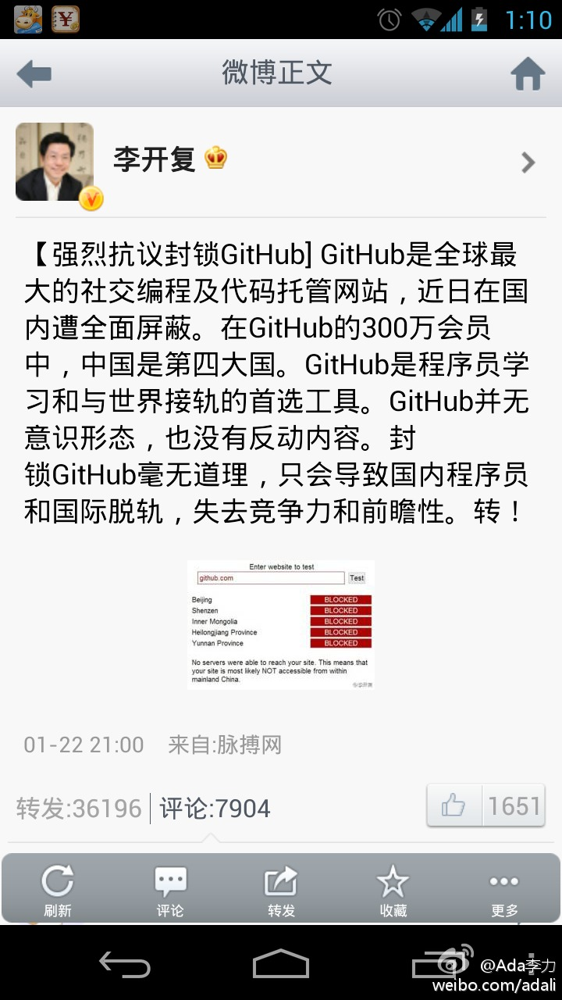

应该还有九人拿到这个平板的，没得瑟是怕请客么？[呵呵]//@张永生:你是传说中的CSDN博客之星么。。。获奖了要请客啊！

Ada李力
2013-01-23


Ada李力
2013-01-23
截图保留，看明天此时会是什么状态，以及评论数和转发数，或者“此贴已删除”…
- 

Ada李力
2013-01-23
帮转，同时征集录制视频的志愿者，可联系@Born白清杰//@Tanthalas: 欢迎各位来参加Cloudstack技术沙龙，我会和大家一起分享Cloudstack项目案例//@CloudStack中国: 参会者将有机会领取CloudStack一键安装盘！限量发放，报名从速哦！@中云网官方微博 @Ada李力 @CSDN云计算 @开源中国 @云基地
@CloudStack中国:
CloudStack技术沙龙2013年第一期已定于1月26日在北京举办，这也标志着2013年CloudStack技术沙龙全国巡讲活动将正式启动！ 本期活动将邀请@天云趋势 刘宇超@Tanthalas 和@迪原创新 谢水平带来CloudStack应用案例的精彩分享。报名请猛戳：
本期活动将邀请@天云趋势 刘宇超@Tanthalas 和@迪原创新 谢水平带来CloudStack应用案例的精彩分享。报名请猛戳： 网页链接
网页链接